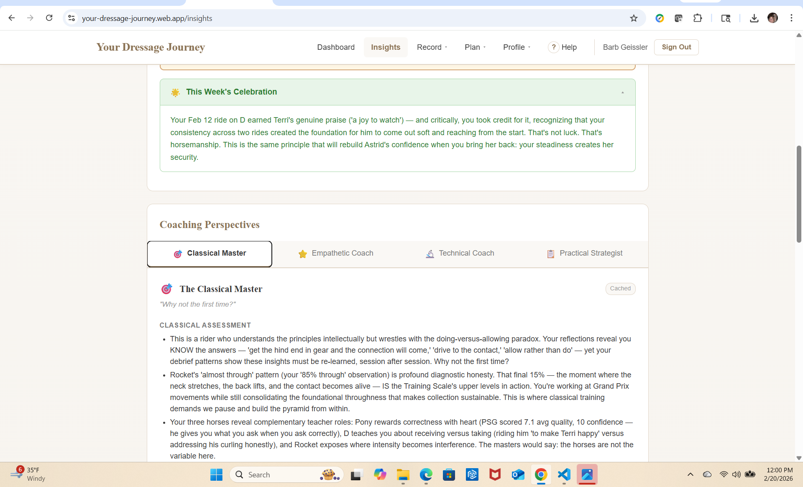

You already think about your rides. Your training. Your horse. What if all of it could be systematically analyzed — revealing patterns, insights, and guidance you simply cannot see alone?
"What you have created is truly mesmerizing, addictive, enchanting. I can't believe it's real. I filled in a ride on each of my three horses and the AI gave me 12 pages of feedback. It is so intelligent on so many levels. I have been a self-help follower for two decades and the feedback puts everything in perspective. The way it's worded is speaking directly to my soul. It fills me with inspiration."
— Pilot Participant · Multi-horse adult amateur rider
Built For You
For adult amateur dressage riders at every level.
If you ride regularly and want to move beyond fragmented memories to make systematic progress — with clarity, confidence, and joy — YDJ was built for you.
🌱
Training through Second Level
Building foundations and seeking the patterns that accelerate learning.
📈
Third Level & Above
Navigating complex biomechanics and mental demands with data-backed insight.
🐴
Multi-horse riders
Separate, personalized profiles and analysis for each horse you ride.
🏆
Competitors
Evidence-based show prep with specific event planning and test strategy.
🎓
Dedicated learners
Riders who invest in their training and want to get more from every ride and every lesson.
🫶
Partnership seekers
Riders who want to understand their horse — not just improve their scores.
The Problem
Journaling alone isn't enough.
📓You journal after rides but patterns stay invisible
🧠Memory is selective — breakthroughs fade, frustrations linger
🔀Cross-ride correlations are impossible to see manually
🐴Each horse is different — tracking multiple is overwhelming
📍Progress is hard to prove when you're in the middle of it
The Solution
Analysis is where progress lives.
✨AI synthesizes every ride, reflection, and event simultaneously
Interactive arena diagrams for 9 core figures — 20m circles, half-passes, serpentines, voltes, and more — with Classical Master coaching on geometry and accuracy.
In App
🃏
Practice Card
A focused, printable ride plan generated from your patterns — with process goals, specific exercises, and in-saddle feel cues for each session. Set intentions before you mount.
In App
The Six Reflection Categories
Every dimension of your journey, captured.
Once a week, you choose one category that resonates with where you are right now. Over time, all six give the AI a complete, multi-dimensional picture of your riding life.
🟦 Personal Milestone
Achievements and breakthroughs that matter to you — regardless of external recognition.
🟩 External Validation
Feedback from coaches, judges, or peers that moved you forward or shifted your perspective.
🟨 Aha Moment
The click. The realization. When theory finally connected to feeling and something made sense.
🟥 Obstacle
Challenges and frustrations — physical, mental, financial, or partnership. The hard parts matter too.
🟧 Feel
Body awareness and physical sensation — the subtle language between horse and rider.
🟪 Connection
The relationship with your horse — trust, understanding, partnership, and those moments of unity.
Your Coaching Team
Four voices. One rider's data.
The same rides and reflections — analyzed through four completely different expert lenses. Each voice sees something the others might miss. Together, they give you a coaching team that's always available and never generic.
🔬
The Technical Coach
Biomechanics · Position · Aids
Clear, cause-and-effect analysis of your position, timing, and movement execution. Identifies the physical patterns beneath the surface.
"Did you feel that?"
⭐
The Empathetic Coach
Psychology · Partnership · Confidence
Warm, perceptive analysis of your mental patterns, fear, confidence arcs, and rider-horse relationship. Sees the whole person.
"You've got this"
🎯
The Classical Master
Training Scale · Philosophy · Horse Welfare
Wise, patient perspective grounded in classical principles and the long arc of dressage development. Patient and occasionally poetic.
"Why not the first time?"
📋
The Practical Strategist
Goals · Planning · Competition Prep
Direct, organized, action-oriented analysis focused on measurable progress, training plans, and preparation for what's next.
"Be accurate!"
Coaching Perspectives — four expert voices, one rider's data. The Classical Master tab is open here, with the Empathetic Coach, Technical Coach, and Practical Strategist waiting.

Riders Say
What happens when your data speaks to you.
★★★★★
"Honestly, I literally teared up reading the insights. They were so on the nose and helpful!"
— Pilot Participant
★★★★★
"Mesmerizing, addictive, enchanting. I can't believe it's real. The feedback puts everything in perspective — it's speaking directly to my soul. It fills me with inspiration."
— Pilot Participant · 3 horses
★★★★★
"I liked this celebration."
Yes — the platform celebrates your wins, too. Every breakthrough, milestone, and moment of connection is named, validated, and built upon.
— Pilot Participant
"Five pieces show you a corner. Twenty pieces reveal a pattern. Fifty pieces show you the full picture."
The more you contribute, the more your journey illuminates itself.
Built For You
For adult amateur dressage riders at every level.
If you ride regularly and want to move beyond fragmented memories to make systematic progress — with clarity, confidence, and joy — YDJ was built for you.
🌱
Training through Second Level
Building foundations and seeking the patterns that accelerate learning.
📈
Third Level & Above
Navigating complex biomechanics and mental demands with data-backed insight.
🐴
Multi-horse riders
Separate, personalized profiles and analysis for each horse you ride.
🏆
Competitors
Evidence-based show prep with specific event planning and test strategy.
🎓
Dedicated learners
Riders who invest in their training and want to get more from every ride and every lesson.
🫶
Partnership seekers
Riders who want to understand their horse — not just improve their scores.
Built on Science
YDJ is grounded in decades of research.
The platform's structure — how you reflect, what you track, how the AI responds — is designed around what the science actually says about how adult learners improve motor skills.
After-Action Reviews
d = 0.79
Structured post-performance analysis produces a large effect on performance improvement — exceeding most formal training interventions. The post-ride debrief is, in research terms, an After-Action Review applied to riding.
Keiser & Arthur, 2020 · 61 studies, 3,499 participants
Process Goals
d = 0.87
Setting process goals — focusing on what you can control, not outcomes — produces very large improvements in self-efficacy and anxiety control. YDJ's three-slot intention format in the debrief is a direct application of this finding.
Kingston & Hardy, 1997 · 54-week study, 37 riders
Adult Learners
Neglected by coaching systems.
Most coaching tools are designed for elite athletes and youth learners. Adult amateurs need self-directed, experience-based, relevance-driven support — and there is almost nothing built for them. YDJ was designed specifically for this gap.